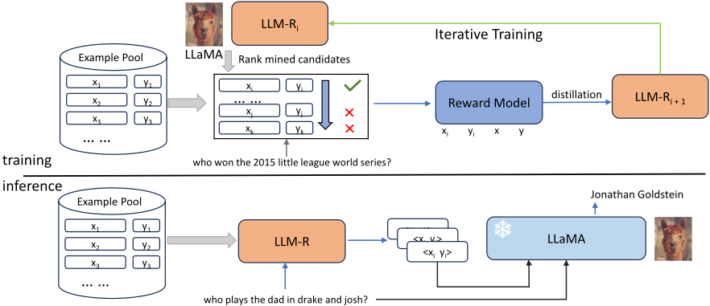
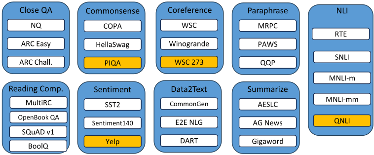
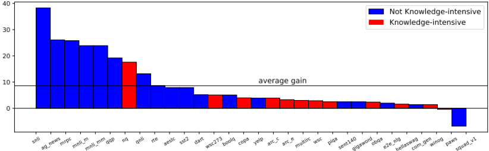
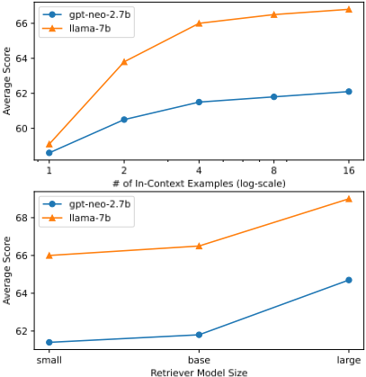

学习为 LLM 检索 In-Context 示例
该论文解决 in-context learning (ICL) 效果高度依赖 few-shot 示例质量、而人工挑选难以扩展的问题，提出 LLM-R 框架自动训练为 LLM 检索高质量 in-context 示例的 dense retriever。方法上先用 BM25 召回候选，再用冻结 LLM 按候选条件下 groundtruth 输出的 log-likelihood 对候选排序，据此训练 cross-encoder 奖励模型捕捉细粒度排序偏好，最后通过知识蒸馏训练 bi-encoder 检索器并迭代优化。在覆盖 9 类共 30 个 NLP 任务、以 LLaMA-7B 评测的实验中，平均比随机选择提升 7.8%，两轮迭代后平均分从 63.5 提升到 66.5，在 4 个 held-out 任务上比次优的 E5base 平均高 5.4 分，并能泛化到不同规模的 LLM。分析显示收益主要来自检索到与测试样例输入模式相似或标签相同的示例：分类类任务收益大，而 closed-book QA、常识推理等依赖模型自身能力的任务收益有限；示例数超过 4 个后收益递减，且 BM25 已是相当强的 baseline。
In-context learning 的效果高度依赖所选 few-shot 示例的质量，LLM 对示例质量非常敏感；已有基于 LLM 反馈训练检索器的方法要么只针对较小语言模型，要么未能以有原则的方式利用 LLM 的细粒度反馈信号。论文要解决如何自动学习一个 dense retriever，为 LLM 的 in-context learning 从统一示例池中检索高质量示例。
提出 LLM-R 迭代训练框架，含四个环节：(1) 训练数据生成：用 BM25 作为初始检索器从各任务训练集并集构成的示例池（约 6.3M 条）召回 top-n 候选，再用冻结 LLM 按候选条件下 groundtruth 输出的 log-likelihood p(y|x, xi, yi) 降序排序（只需一次前向传播，不依赖任务特定指标）；(2) 奖励建模：训练 cross-encoder 奖励模型（ELECTRAbase 初始化），从排序靠前候选采正例、靠后采难负例，用交叉熵损失捕捉 LLM 的细粒度排序偏好，其分数比 LLM log-likelihood 更适合作为蒸馏的软标签；(3) 知识蒸馏：训练 bi-encoder dense retriever（E5base 初始化，查询与候选共享编码器），损失为 KL 散度蒸馏损失（仅在难负例上计算）与 InfoNCE 对比损失的加权和；(4) 迭代训练：用上一轮检索器重新召回候选，挖掘更好的正例与难负例。推理时用训练好的检索器取 top-k 作为 in-context 示例拼入 prompt。
在 9 类共 30 个 NLP 任务上（LLaMA-7B 评测），LLM-R 相比随机选择平均提升 7.8% 的 in-context learning 性能
第一轮迭代后超过所有 baseline（平均分 63.5 → 65.7），第二轮迭代升至 66.5（+0.8），后续迭代无明显提升
在 4 个 held-out 任务（QNLI、PIQA、WSC273、Yelp）上比次优的 E5base 平均高 5.4 分
跨 LLM 泛化：在 GPT-Neo-2.7B、LLaMA-13B、GPT-35-Turbo 上持续优于 BM25 baseline，小尺寸语言模型收益尤其显著
消融实验：去掉奖励模型（仅用对比损失）平均分下降 0.8；用 LLM log-likelihood 直接作蒸馏目标比本文奖励模型低 0.5 分
Scaling 分析：in-context 示例数超过 4 个后收益递减；large 尺寸检索器比 small/base 带来更明显提升
训练成本：用 LLaMA-7B 对 200k 样本的候选排序约需 12 小时（8 张 V100 GPU），检索器与奖励模型训练合计不到 10 小时
相对已有工作的区别：(1) 相比 EPR 等只针对较小语言模型的方法，本文面向 LLaMA-7B 等大模型并验证跨模型规模（2.7B 到数百亿参数）的泛化；(2) 相比未充分利用细粒度反馈的统一多任务检索方法，本文用 LLM 条件 log-likelihood 排序产生细粒度监督，先训练 cross-encoder 奖励模型再蒸馏给 bi-encoder，用更有信息量的软标签替代启发式构造的 one-hot 标签；(3) 奖励模型在训练时可访问 groundtruth 标签 y（测试时不可得），这是与 ad-hoc 检索中 re-ranker 的关键差异；(4) 采用迭代训练不断挖掘更好的正例与难负例。
相关度级别：high
命中能力域：3.1 上下文工程与记忆 | 3.2 提示工程 | 3.5 评测与可靠使用
理由：论文核心是'为 LLM 自动检索高质量 in-context 示例'，直接命中 3.1 的 RAG/检索增强与结构化上下文组织（检索增强的 ICL 是上下文组装的关键手段），也直接命中 3.2 的 in-context learning 与提示示例选择；其对示例数量、检索器规模与推理成本之间 trade-off 的系统分析涉及 3.5 的成本与效率优化。团队构建知识库问答、代码生成与审查等应用时，few-shot 示例的选择是影响产出质量的关键环节，该文提供了可复用的训练管线与多条可直接指导选型的工程结论（BM25 是强 baseline、4 个示例后收益递减、小模型受益更大、奖励模型蒸馏优于直接用 LLM 分数）。
建议动作：深入精读并做内部分享
arXiv:2307.07164v2 [cs.CL] 2024年1月26日
学习为大语言模型检索上下文示例
Liang Wang、Nan Yang、Furu Wei
微软研究院
{wangliang,nanya,fuwei}@microsoft.com
大语言模型（LLMs）已展现出上下文学习（in-context learning）的能力，使其能够基于少量输入-输出示例执行各种任务。然而，上下文学习的有效性在很大程度上依赖于所选示例的质量。在本文中，我们提出了一种新颖的框架，用于迭代训练稠密检索器（dense retrievers），从而为大语言模型识别高质量的上下文示例。我们的框架首先基于LLMs的反馈训练一个奖励模型（reward model）来评估候选示例的质量，随后通过知识蒸馏训练基于双编码器（bi-encoder）的稠密检索器。我们在一组共30个任务上的实验表明，我们的框架显著提升了上下文学习的性能。此外，我们展示了我们的框架对训练期间未见任务的泛化能力。深入分析表明，我们的模型通过检索具有相似模式的示例来提升性能，且这种增益在不同规模的LLMs上保持一致。代码和数据可在 https://github.com/microsoft/LMOps/ tree/main/llm_retriever 获取。
上下文学习（in-context learning, ICL）(Brown et al., 2020) 是一种新兴的学习范式，它允许大语言模型（LLMs）利用少样本示例来执行任务，而无需对模型参数进行任何更新。这种方法与传统的机器学习形成了鲜明对比，在传统机器学习中，模型通常是在大规模的标注示例数据集上进行训练的 (Devlin et al., 2019)。上下文学习在标注数据稀缺或获取成本高昂的领域具有显著优势，因为它大大减少了所需标注数据的数量。
在理解和提升上下文学习的有效性方面存在若干挑战。其中一个挑战是，LLMs 对所提供的上下文示例的质量可能高度敏感 (Liu et al., 2022; Min et al., 2022)。如果这些示例不能代表目标任务，那么模型可能无法有效地学习。实证研究 (Liu et al., 2022; Luo et al., 2023) 已经证明，使用 BM25 算法或现成的句子嵌入 (Reimers and Gurevych, 2019) 从训练集中检索示例，相比随机选择能够显著提升上下文学习的性能。另一种方法是基于 LLMs 的反馈信号来训练稠密检索器，这种方法在语义解析 (Rubin et al., 2022)、跨任务提示检索 (Cheng et al., 2023) 以及统一的多任务检索 (Li et al., 2023) 中已展现出可喜的成果。然而，现有方法要么只关注相对较小的语言模型 (Rubin et al., 2022)，要么未能以有原则的方式利用来自 LLMs 的细粒度反馈信息 (Li et al., 2023)。
在本文中，我们提出了一个新颖的框架 LLM-R（ LLMR etriever），旨在为大语言模型检索高质量的上下文示例。给定一组初始检索到的候选示例，我们的框架基于真实输出的条件 LLM 对数概率对其进行排序。随后，训练一个基于交叉编码器（cross-encoder）的奖励模型来捕获来自 LLMs 的细粒度排序信号。最后，通过知识蒸馏训练一个基于双编码器（bi-encoder）的稠密检索器。奖励模型在提供更适合蒸馏的、信息更丰富的软标签方面发挥着关键作用，而不是使用启发式构造的独热（one-hot）标签。通过基于最新的稠密检索器检索一组新的候选示例，该流程可以迭代多次。
出于评估目的，我们构建了一个多样化的任务集，共包含30个NLP任务，涵盖问答、自然语言推理、常识推理和摘要生成等9个类别。使用 LLaMA-7B（Touvron et al., 2023）获得的实验结果表明，与随机选择相比，我们的模型将上下文学习性能平均提升了7.8%。在留出任务以及不同规模的LLMs上也观察到了类似的提升。进一步分析表明，检索排名靠前的示例与测试示例具有相似的输入模式或相同的标签。我们的模型对于拥有充足训练样本的分类任务尤为有效。相比之下，闭卷问答和常识推理等任务更多依赖于LLMs的固有能力，对上下文示例质量的敏感度较低。
上下文学习（In-Context Learning）是大语言模型（LLMs）的一种涌现特性，使模型能够在仅给定少量输入-输出示例的条件下执行各种任务，而无需任何参数更新或微调。这一特性已在 GPT-3（Brown et al., 2020）、GPTNeo（Black et al., 2021）和 LLaMA（Touvron et al., 2023）等大语言模型中得到验证，并引起了研究界的广泛关注。其中一个研究方向专注于理解上下文学习的底层机制与原理。例如，Xie 等人将上下文学习视为隐式贝叶斯推断，而 Dai 等人则将其解释为元优化。
另一个研究方向是探索为 LLMs 选择和设计上下文示例的不同策略。近期研究（Liu et al., 2022; Rubin et al., 2022; Li et al., 2023; Luo et al., 2023）表明，使用 BM25 算法或基于 LLM 反馈微调稠密检索器来从训练集中检索示例，可以提升上下文学习的性能。我们的工作也属于这一领域，提出了一种新颖的训练方法。为了对上下文示例之间的交互进行建模，已有初步探索引入了行列式点过程（determinantal point process）（Ye et al., 2023）和序贯决策（Zhang et al., 2022）。相比之下，Structured Prompting（Hao et al., 2022）突破了输入上下文长度的限制，将上下文示例的数量扩展到数千个。
稠密检索（Dense Retrieval）是一种广泛使用的信息检索方法，它利用稠密向量在潜在空间中对查询与文档进行语义匹配（Reimers and Gurevych, 2019; Wang et al., 2022）。与 BM25 等稀疏检索方法相比，稠密检索利用预训练语言模型（PLMs）（Devlin et al., 2019）强大的建模能力来学习相关性函数，并有望克服词汇失配问题。为提升稠密检索的性能，已有多种技术被提出，例如难负例挖掘（Karpukhin et al., 2020）、知识蒸馏（Ren et al., 2021）和持续预训练（Wang et al., 2022）。
检索增强大语言模型（Retrieval Augmented LLMs）将大语言模型（LLMs）的生成能力与从外部来源检索相关信息的能力相结合（Ram et al., 2023; Lewis et al., 2020; Shi et al., 2023）。这一范式有潜力提升生成文本的事实一致性，使 LLMs 感知最新知识，并提供一种自然的来源归因方式（Nakano et al., 2021）。检索到的信息可以通过多种机制融入 LLMs，例如输入拼接（Shi et al., 2023）、中间注意力融合（Borgeaud et al., 2022）以及输出插值（Khandelwal et al., 2020）。对于上下文学习（in-context learning），检索增强的目标是通过检索信息丰富的示例来提升 LLMs 在下游任务上的性能（Li et al., 2023; Luo et al., 2023）。
在本节中，我们对上下文示例检索（in-context example retrieval）的问题设定进行简要介绍。给定来自目标任务的测试示例 x test 以及来自预定义池 P 的 k 个上下文示例 { ( x i , y i ) } k i =1，采用冻结的语言模型 M 通过自回归解码来预测输出 y ′ test。上下文示例检索的主要目标是从 P 中检索出 k 个示例，使得基于某些任务特定的指标，预测输出 y ′ test 尽可能接近真实输出 y test。在本文中，示例池 P 是我们评估中所有任务的训练集的并集。
直接的解决方案包括利用 BM25 算法或现成的文本嵌入模型（Wang et al., 2022; Liu et al., 2022），将 x test 作为查询来从 P 中检索示例。尽管这些方法简单，但已有实证结果表明，与随机选择基线相比，它们更为有效。相比之下，我们的框架旨在通过利用 LLMs 的反馈，学习一个为上下文示例检索定制的稠密检索器。

我们提出的框架如图 1 所示。它包含四个主要组成部分：训练数据生成、奖励建模、稠密检索器训练和推理，以下小节将对其进行详细介绍。
初始候选检索 给定训练集中的一个示例 (x, y)，其中 x 为输入，y 为真实输出，我们使用初始检索器从示例池 P 中检索前 n 个候选 {(x_i, y_i)}_{i=1}^{n}。示例池 P 包含来自多种任务混合的训练示例。由于在训练期间 (x, y) ∈ P 成立，我们将该示例自身从检索结果中排除。
在本文中，我们采用无监督的 BM25 算法作为初始检索器。查询仅由输入 x 构成，而每个检索候选则是输入 x_i 与输出 y_i 的字符串拼接。这一设置与测试时的场景相符，即真实输出不可用。在初始检索器较为有效的情况下，前 n 个候选中很可能包含一些正例和难负例。
使用大语言模型（LLM）对候选进行排序 为了评估检索到的候选的质量，我们利用来自冻结 LLM 的反馈信号。具体而言，我们基于真实输出 y 的对数似然按降序对候选进行排序，如下式所示：
其中，p(y | x, x_i, y_i) 表示在给定输入 x 和第 i 个候选 (x_i, y_i) 的条件下 y 的条件概率。值得注意的是，尽管语言模型具有自回归特性，计算 p(y | x, x_i, y_i) 仅需一次前向传播，且不依赖任何任务特定的指标。在实际应用中，这有助于降低 LLM 的推理成本。
为了捕捉 LLM 对检索到的候选样本的偏好，并为稠密检索器（dense retriever）提供细粒度的监督，我们提出训练一个基于交叉编码器（cross-encoder）的奖励模型。对于一个训练样本 ( x, y )，我们首先从排名靠前的候选中采样一个正样本 ( x + , y + )，并从排名靠后的候选中采样 N neg 个难负样本 { ( x - i , y - i ) } N neg i =1。奖励模型以 ( x, y, x + , y + ) 的拼接作为输入，并产生一个实值分数 s ( x, y, x + , y + )，对难负样本也作同样处理。该模型通过最小化以下交叉熵损失进行训练：
值得注意的是，奖励模型仅用于为稠密检索器提供监督，并且能够访问真实标签 y，而该标签在测试时是不可获得的。这是它与即席检索（ad-hoc retrieval）场景中重排序器（re-ranker）的一个关键区别（Ren et al., 2021）。与基于双编码器（bi-encoder）的稠密检索器相比，奖励模型使输入之间能够进行充分的交互，因此可以充当教师模型。LLM 产生的对数似然分数在不同样本之间表现出很高的方差。相比之下，奖励模型的分数更适合用于知识蒸馏。
为了实现高效推理，稠密检索器（dense retriever）基于双编码器（bi-encoder）架构。给定查询 x，我们通过对最后一层隐藏状态执行平均池化来计算其低维嵌入 h x。类似地，我们通过将 x i 与 y i 拼接作为输入，得到候选 ( x i , y i ) 的嵌入 h ( x i ,y i )。匹配分数 f ( x, x i , y i ) 计算为经温度缩放的余弦相似度 cos( h x , h ( x i ,y i ) ) /τ，其中 τ 是温度超参数。在本文中，我们对查询和检索候选使用共享编码器。
稠密检索器通过从奖励模型蒸馏知识来进行训练。我们使用 KL 散度损失 L distill = KL ( p reward || p retriever ) 来度量奖励模型分布 p reward 与检索器分布 p retriever 之间的不匹配。出于效率考虑，L distill 仅在难负例（hard negatives）上计算。为了纳入批内负例（in-batch negatives），我们还引入了基于 InfoNCE 的对比损失 L cont（Chen et al., 2020），将奖励最高的候选视为正例。最终的损失函数 L retriever 是对比损失与知识蒸馏损失的加权和：
其中，α 是控制两种损失相对重要性的常数。
迭代训练 如图 1 所示，在第 i 次迭代中训练得到的检索器可用于为后续的第 i +1 次迭代检索候选。在第一次迭代中，候选使用 BM25 检索得到。这种迭代训练方法（Xiong et al., 2021; Li et al., 2023）能够通过挖掘更好的正例和难负例来提升检索器质量。
给定一个测试样例 x test，我们使用训练好的检索器计算其嵌入 h test，并从候选池 P 中检索 top k 个候选作为 k-shot 上下文示例（in-context examples）。LLM 的输入是 k-shot 示例与 x test 的拼接。整体流程如图 1 所示。
根据 x test 的任务类型，采用不同的解码策略来生成最终预测。对于分类任务，我们使用带约束解码的贪心搜索，以确保预测结果是有效的类别标签。对于多选题任务，所有选项根据平均 token 级对数似然得分进行排序，得分最高的选项被选为模型的预测。生成任务则使用不带任何约束的贪心搜索。在定量评估中，使用任务特定的指标将预测结果与真实标签 y test 进行比较。
我们总共使用来自 9 个不同类别的 30 个公开可用数据集¹进行训练和评估，如图 2 所示。该数据集集合基于 FLAN（Wei et al., 2022）和 UPRISE（Cheng et al., 2023）。与我们的工作不同，FLAN 专注于微调语言模型使其遵循指令，而 UPRISE 则是为跨任务检索而设计的。为了测试模型对未见任务的泛化能力，我们从训练过程中留出了四个数据集，即 QNLI、PIQA、WSC273 和 Yelp。检索池由所有训练样本的并集构成，共计约 6.3M 个样本。对于每个数据集，我们最多采样 30k 个样本用于训练、10k 个样本用于评估，以降低大语言模型（LLM）
1 我们交替使用“数据集”和“任务”这两个术语。

| # of datasets → | CQA 3 | Comm. 3 | Coref. 3 | NLI 5 | Para. 3 | RC 4 | Sent. 3 | D2T 3 | Summ. 3 | Avg 30 |
|---|---|---|---|---|---|---|---|---|---|---|
| Zero-shot | 29.0 | 71.5 | 66.8 | 44.0 | 60.0 | 41.3 | 50.5 | 25.6 | 17.5 | 44.9 |
| Random | 40.4 | 77.6 | 67.2 | 50.9 | 56.6 | 58.1 | 88.8 | 47.0 | 38.9 | 57.9 |
| K-means | 41.6 | 79.5 | 66.0 | 50.8 | 52.6 | 53.6 | 90.9 | 42.5 | 40.5 | 57.0 |
| BM25 | 45.9 | 78.1 | 62.9 | 54.7 | 66.1 | 59.9 | 89.6 | 49.3 | 50.0 | 61.3 |
| E5 base | 49.0 | 79.8 | 64.6 | 53.6 | 58.0 | 60.2 | 94.4 | 48.0 | 50.0 | 61.4 |
| SBERT | 48.5 | 79.3 | 64.2 | 57.5 | 64.1 | 60.6 | 91.9 | 47.4 | 49.3 | 62.1 |
| EPR † | 48.4 | 79.3 | 64.4 | 64.3 | 65.1 | 59.8 | 91.7 | 49.7 | 50.0 | 63.5 |
| LLM-R (1 iter) | 48.8 | 80.1 | 67.6 | 71.9 | 66.5 | 60.0 | 93.5 | 50.1 | 50.8 | 65.7 |
| LLM-R (2 iter) | 48.7 | 80.4 | 70.4 | 72.5 | 71.5 | 59.0 | 93.6 | 49.9 | 51.1 | 66.5 |
| LLM-R (3 iter) | 48.9 | 80.0 | 70.8 | 72.6 | 72.8 | 58.0 | 92.9 | 49.8 | 50.8 | 66.4 |
| Std dev. | ± 0.2 | ± 0.8 | ± 0.7 | ± 0.1 | ± 1.1 | ± 0.0 | ± 0.4 | ± 0.0 | ± 0.1 | ± 0.2 |
| # of datasets → | CQA 3 | Comm. 3 | Coref. 3 | NLI 5 | Para. 3 | RC 4 | Sent. 3 | D2T 3 | Summ. 3 | Avg 30 |
推理成本。在评估中，我们报告每个任务类别的平均指标。有关每个数据集所使用的具体指标，请参见表 8。
在主实验中，除非另有说明，我们使用 LLaMA-7B（Touvron et al., 2023）作为用于候选排序和任务评估的默认 LLM。奖励模型使用 ELECTRAbase（Clark et al., 2020）进行初始化，检索器使用 E5base（Wang et al., 2022）进行初始化。基线方法包括零样本提示、k-means 聚类、随机选择、BM25（Lin et al., 2021），以及两个现成的稠密检索器，即 SBERT（all-mpnet-base-v2）（Reimers and Gurevych, 2019）和 E5base。除零样本评估外，我们为每个测试输入检索 8 个上下文示例。更多实现细节和训练超参数见附录 A。
表 1 展示了我们实验的主要结果。我们观察到，简单的 BM25 算法可以作为一个强大的基线，相比随机选择策略表现出持续的改进。这一结论与 Luo 等人的发现一致。BM25 的这种有效性可以通过提供一组高质量候选示例来帮助预热第一轮训练迭代。我们也尝试使用 E5base 作为初始检索器，但与 BM25 相比其收益微乎其微。因此，出于简单性的考虑，我们坚持使用 BM25。
在第一轮迭代之后，我们提出的模型 LLM-R 通过在 BM25 检索到的候选示例上进行训练，超越了所有基线（63.5 → 65.7）。第二轮迭代纳入了从 "LLM-R (1 iter)" 中挖掘出的正例和难负例，将平均分数提升至 66.5（+0.8）。后续迭代并未带来实质性改进，表明模型已经收敛。
| CQA | Comm. | Coref. | NLI | Para. | RC | Sent. | D2T | Summ. | Avg | |
|---|---|---|---|---|---|---|---|---|---|---|
| LLM-R (1 iter) | 48.8 | 80.1 | 67.6 | 71.9 | 66.5 | 60 | 93.5 | 50.1 | 50.8 | 65.7 |
| model variants | ||||||||||
| w/o reward model | 48.8 | 79.1 | 64.3 | 68.9 | 70.2 | 60.5 | 91.7 | 49.4 | 50.5 | 64.9 ↓ 0 . 8 |
| reward model w/o label y + | 48.5 | 79.7 | 67.5 | 64.1 | 62.7 | 60.8 | 92.3 | 49.6 | 49.8 | 63.8 ↓ 1 . 9 |
| LLM score as reward | 48 | 79.4 | 67 | 67 | 74 | 60.5 | 91.5 | 49.6 | 50.3 | 65.2 ↓ 0 . 5 |
| retriever initialization initialize w/ BERT base | 48.7 | 79.6 | 69.4 | 70.9 | 63 | 60.7 | 92 | 50 | 50.2 | 65.2 ↓ 0 . 5 |
| | CQA | Comm. | Coref. | NLI | Para. | RC | Sent. | D2T | Summ. | Avg |
| Zero-shot | Random | K-means | BM25 | E5 base | SBERT | LLM-R | |
|---|---|---|---|---|---|---|---|
| QNLI | 49.2 | 56.4 | 53.4 | 62.2 | 61.5 | 61.9 | 69.6 ↑ 7 . 7 |
| PIQA | 77 | 79.1 | 79.4 | 81.3 | 81.3 | 80.7 | 81.6 ↑ 0 . 3 |
| WSC273 | 74 | 74.4 | 74.7 | 64.5 | 65.2 | 62.6 | 79.5 ↑ 4 . 8 |
| Yelp | 47.9 | 92 | 93.5 | 93.5 | 97.3 | 95.9 | 95.9 ↓ 1 . 4 |
| Average | 62 | 75.5 | 75.3 | 75.4 | 76.3 | 75.3 | 81.7 ↑ 5 . 4 |
| | Zero-shot | Random | K-means | BM25 | E5 base | SBERT | LLM-R |
在本节中，我们考察了 LLM-R 在各种任务、LLM 和模型变体上的性能。除非另有明确说明，"LLM-R" 均指经过 2 轮训练迭代的模型。
我们在表 2 中研究了若干 LLM-R 变体，以了解每个组件的贡献。'w/o reward model'（无奖励模型）变体移除了知识蒸馏损失，平均得分下降 0.8 分。这表明奖励模型对 LLM-R 的性能至关重要。受 REPLUG (Shi et al., 2023) 的启发，我们实验了一种使用 LLM 的对数似然（log-likelihood）作为蒸馏奖励的变体。尽管该变体优于 'w/o reward model' 变体，但仍比我们的方法落后 0.5 分。LLM 的平均 token 级对数似然本质上并不是一个概率分布。我们通过实验观察到，某些训练样本的反馈分数集中在非常窄的范围内，而其他分数则更为分散。这使得它在 KL 散度（KL-divergence）框架内作为目标分布并非最优。将检索器的初始化从 E5 (Wang et al., 2022) 更改为 BERT (Devlin et al., 2019) 会导致性能下降，但下降幅度不如在 ad-hoc 检索设置中那么显著。
我们从两个维度评估 LLM-R 的泛化能力。在第一个场景中，我们测试训练得到的检索器能否为训练期间未见过的任务检索出良好的上下文示例（in-context examples）。在第二个场景中，我们测试用一个大语言模型（LLM）训练得到的模型能否泛化到规模和质量各异的其他 LLM。
在表 3 中，我们报告了 LLM-R 在四个留出任务（held-out tasks）上的性能。结果表明，LLM-R 以平均 5.4 分的优势超过次优模型 E5base，这表明它具备泛化到先前未见任务的能力。在当前的评估协议下，存在与留出任务属于相同任务类别的训练数据集（例如，QNLI 和 SNLI 都用于自然语言推断）。更具挑战性的设置是在互不重叠的任务类别上进行测试，我们将此留待未来工作。
LLM-R 模型使用 LLaMA-7B 进行训练。为了评估其跨不同 LLM 的泛化能力，我们在另外三个模型上进行测试，即 GPT-Neo-2.7B (Black et al., 2021)、LLaMA-13B 和 GPT-35-Turbo。表 4 中的结果显示，对于参数规模从 2.7B
| CQA | Comm. | Coref. | NLI | Para. | RC | Sent. | D2T | Summ. | Avg | |
|---|---|---|---|---|---|---|---|---|---|---|
| gpt-neo-2.7b | gpt-neo-2.7b | gpt-neo-2.7b | gpt-neo-2.7b | gpt-neo-2.7b | gpt-neo-2.7b | gpt-neo-2.7b | gpt-neo-2.7b | gpt-neo-2.7b | gpt-neo-2.7b | gpt-neo-2.7b |
| BM25 | 41.1 | 67.0 | 53.2 | 47.6 | 64.5 | 51.2 | 78.3 | 45.4 | 47.3 | 54.4 |
| LLM-R | 42.2 | 68.0 | 59.7 | 71.5 | 73.0 | 51.6 | 91.6 | 46.9 | 48.8 | 61.8 ↑ 7 . 4 |
| llama-13b | llama-13b | llama-13b | llama-13b | llama-13b | llama-13b | llama-13b | llama-13b | llama-13b | llama-13b | llama-13b |
| BM25 | 49.6 | 80.1 | 61.1 | 67.0 | 69.9 | 60.5 | 92.5 | 49.9 | 50.9 | 64.6 |
| LLM-R | 52.0 | 83.7 | 71.2 | 76.8 | 73.3 | 62.2 | 94.2 | 50.7 | 52.0 | 68.8 ↑ 4 . 2 |
| gpt-35-turbo † | gpt-35-turbo † | gpt-35-turbo † | gpt-35-turbo † | gpt-35-turbo † | gpt-35-turbo † | gpt-35-turbo † | gpt-35-turbo † | gpt-35-turbo † | gpt-35-turbo † | gpt-35-turbo † |
| BM25 | 75.3 | 85.2 | 65.0 | 78.1 | 78.0 | 84.4 | 95.7 | 51.9 | 52.8 | 74.7 |
| LLM-R | 79.3 | 86.7 | 63.8 | 79.6 | 76.0 | 84.0 | 95.4 | 52.2 | 53.0 | 75.1 ↑ 0 . 4 |
| | CQA | Comm. | Coref. | NLI | Para. | RC | Sent. | D2T | Summ. | Avg |

到数百亿不等的 LLM，LLM-R 均始终优于 BM25 基线。值得注意的是，对于小型语言模型，性能提升尤为显著，这可能是因为它们能力较弱，因此需要更高质量的示例才能进行上下文学习（in-context learning）。
为所有任务报告单一的聚合分数便于在不同模型变体之间进行比较。然而，这种做法掩盖了 LLM-R 在某些任务上的表现优于其他任务这一事实，并且在某些情况下甚至可能导致性能下降。在图 3 中，我们将任务划分为两组。如果解决某项任务需要常识、复杂推理或已记忆的事实性知识，则该任务被视为知识密集型任务。
对于知识密集型集合中的任务，其绝对提升幅度远小于平均值，NQ 是唯一的例外。这并不令人意外，因为这些任务在很大程度上依赖于底层基础模型进行推理和知识记忆的能力。对于 NQ 数据集，我们通过实验发现训练集与测试集之间存在一定的重叠，即测试问题是某些训练问题的改写。尽管如此，我们仍决定在评估中保留 NQ 数据集，因为它是一个被广泛使用的基准测试（benchmark），且其余不重叠的问题仍然具有价值。
另一个值得注意的案例是 SQuAD v1 数据集（Rajpurkar et al., 2016），在该数据集上 LLM-R 的表现差于随机选择基线。经过人工检查，我们发现 SQuAD 中的许多问题共享同一段落作为上下文。这经常导致 LLM-R 检索到的示例多样性有限，这或许可以解释所观察到的性能下降。
在表 5 中，对于 Sentiment140 和 MNLI 数据集，我们的模型通过检索与测试示例具有相似输入模式的示例来提供帮助。相比之下，PIQA 数据集需要常识知识，可能无法从检索到的示例中获得太多收益。
| 0 | 1 |
|---|---|
| Task name | Sentiment140 |
| Test Input | Math review. Im going to fail the exam. What is the sentiment of this tweet? |
| Test Answer | Negative |
| LLM-R | revising for maths exam on tuesday which im gonna fail badly What is the sentiment of this tweet? Negative |
| Task name | MNLI-m |
| Test Input | Premise: "Part 2), Confidentiality of Alcohol and Drug Abuse Patient Records." Hypothesis: "Drug and alcohol patient records should be confidential" Does the premise entail the hypothesis? Yes, No, or Maybe? |
| Test Answer | Yes |
| LLM-R | Premise: "Eligible Clients unable to attain needed legal assistance" Hypothesis: "Clients that should have received legal assistance but didn't" Does the premise entail the hypothesis? Yes, No, or Maybe? Yes |
| Task name | PIQA |
| Test Input | Here is a goal: "How can I keep a bathroom mirror from fogging up?" How would you accomplish this goal? |
| Test Answer | Wipe down with shaving cream. |
| LLM-R | Here is a goal: "how do you 'clean up' an eyebrow you've filled in?" How would you accomplish this goal? use concealer to cover up any mistakes made. |
| 0 | 1 |
| Rank LLM → Eval LLM ↓ | GPT-Neo-2.7B | LLaMA-7B | Both |
|---|---|---|---|
| GPT-Neo-2.7B | 61.7 | 61.3 | 61.6 |
| LLaMA-7B | 66 | 65.7 | 66.3 |
| Rank LLM → Eval LLM ↓ | GPT-Neo-2.7B | LLaMA-7B | Both |
我们框架的一个关键方面是选择用于训练数据生成和任务评估的 LLM。在训练阶段，LLM 在对检索到的候选示例进行排序以及为奖励模型提供监督信号方面发挥着关键作用。在任务评估阶段，LLM 被用于生成最终预测。
我们使用 GPT-Neo-2.7B 和 LLaMA-7B 进行实验。表 6 展示了训练和评估采用不同 LLM 组合时的结果。我们观察到，评估 LLM 的质量是决定最终性能的主要因素，而排序 LLM 的选择影响相对较小。尽管合并来自两个 LLM 的训练数据能带来最佳的整体性能，但为了简便起见，我们在主要实验中并未采用这一技术。
在图 4 中，我们从两个方面考察 LLM-R 的缩放效应：上下文示例的数量和检索器模型的规模。随着检索示例数量的增加，整体性能有所提升，但在 4 个示例之后增益逐渐减小。包含更多示例通常会导致更长的提示和更高的推理成本。

关于检索器规模，我们观察到小规模模型取得了与基础规模模型相当的结果，而大规模检索器则表现出更为显著的性能提升。这一趋势在所考察的两种语言模型上均保持一致。实践者可以根据性能与计算成本之间的权衡来选择合适的配置。
在本文中，我们提出了一种名为 LLM-R 的迭代训练框架，用于为大语言模型（LLM）检索高质量的上下文示例（in-context examples）。该框架利用冻结的 LLM 对检索到的头部候选进行排序以生成训练数据，然后学习一个基于交叉编码器（cross-encoder）的奖励模型来捕捉排序偏好。基于双编码器（biencoder）的稠密检索器则经过训练以从奖励模型中蒸馏知识。我们在多样化的任务集合上对 LLM-R 进行了全面评估，结果表明其始终优于各种强基线方法。我们的模型对留出任务（held-out tasks）以及不同规模的 LLM 也具有良好的泛化能力。
在我们的框架中，我们将每个候选示例独立对待，并为每个测试示例检索 topk 个结果。这种做法可能并非最优，因为上下文示例（in-context examples）之间可能相互影响。引入组合优化与序贯决策领域的技术，是一个值得探索的有前景的方向。
我们研究的另一个局限性与自动评估协议有关。为了比较不同方法的性能，我们报告所有任务上各指标的算术平均值。然而，这可能会使生成任务处于不利地位，因为与分类准确率相比，ROUGE 和 BLEU 等指标的取值变化范围通常更窄。此外，简单的算术平均并未考虑每个数据集的质量。
| Retriever | Reward Model | |
|---|---|---|
| initialization | E5 base | ELECTRA base |
| learning rate | 3 × 10 - 5 | 10 - 5 |
| # of GPUs | 8 | 8 |
| batch size | 256 | 128 |
| train steps | 6k | 3k |
| τ | 0.01 | n.a. |
| α | 0.2 | n.a. |
| positive examples | top 3 | bottom 16 |
| negative examples | top 3 | bottom 16 |
| # of negatives | 3 | 7 |
| ranking depth | 100 | 100 |
| input length | 256 | 384 |
| | Retriever | Reward Model |
| Dataset name | Category | # train | # test | Metric | Held-out? |
|---|---|---|---|---|---|
| AESLC (Zhang and Tetreault, 2019) | Summarize | 13,181 | 1,750 | ROUGE-L | N |
| AGNews (Zhang et al., 2015) | Summarize | 120,000 | 7,600 | Accuracy | N |
| ARC Challenge (Bhakthavatsalam et al., 2021) | Close QA | 1,117 | 1,165 | Accuracy | N |
| ARC Easy (Bhakthavatsalam et al., 2021) | Close QA | 2,241 | 2,365 | Accuracy | N |
| BoolQ (Clark et al., 2019) | Reading Comp. | 9,427 | 3,270 | Accuracy | N |
| CommonGen (Lin et al., 2020) | Data-to-text | 67,389 | 4,018 | ROUGE-L | N |
| COPA (Roemmele et al., 2011) | Commonsense | 400 | 100 | Accuracy | N |
| DART (Nan et al., 2021) | Data-to-text | 62,659 | 2,768 | ROUGE-L | N |
| E2E NLG (Dušek et al., 2019) | Data-to-text | 33,525 | 1,847 | ROUGE-L | N |
| Gigaword (Napoles et al., 2012) | Summarize | 2,044,465 | 730 | ROUGE-L | N |
| HellaSwag (Zellers et al., 2019) | Commonsense | 39,905 | 10,042 | Accuracy | N |
| MNLI (m) (Williams et al., 2018) | NLI | 392,702 | 9,815 | Accuracy | N |
| MNLI (mm) (Williams et al., 2018) | NLI | 392,702 | 9,832 | Accuracy | N |
| MRPC (Dolan and Brockett, 2005) | Paraphrase | 3,668 | 408 | Accuracy | N |
| MultiRC (Khashabi et al., 2018) | Reading Comp. | 27,243 | 4,848 | F1 | N |
| NQ (Kwiatkowski et al., 2019) | Close QA | 87,925 | 3,610 | Exact Match | N |
| OpenBook QA (Mihaylov et al., 2018) | Reading Comp. | 4,957 | 500 | Accuracy | N |
| PAWS (Zhang et al., 2019) | Paraphrase | 49,401 | 8,000 | Accuracy | N |
| PIQA (Bisk et al., 2020) | Commonsense | 16,113 | 1,838 | Accuracy | Y |
| QNLI (Rajpurkar et al., 2018) | NLI | 104,743 | 5,463 | Accuracy | Y |
| QQP (Wang et al., 2019) | Paraphrase | 363,846 | 40,430 | Accuracy | N |
| RTE (Bentivogli et al.) | NLI | 2,490 | 277 | Accuracy | N |
| Sentiment140 (Go et al., 2009) | Sentiment | 1,600,000 | 359 | Accuracy | N |
| SNLI (Bowman et al., 2015) | NLI | 549,367 | 9,824 | Accuracy | N |
| SQuAD v1 (Rajpurkar et al., 2016) | Reading Comp. | 87,599 | 10,570 | Exact Match | N |
| SST2 (Socher et al., 2013) | Sentiment | 67,349 | 872 | Accuracy | N |
| Winogrande (Sakaguchi et al., 2020) | Coreference | 40,398 | 1,267 | Accuracy | N |
| WSC (Levesque et al., 2012) | Coreference | 554 | 104 | Accuracy | N |
| WSC273 (Levesque et al., 2012) | Coreference | 0 | 273 | Accuracy | Y |
| Yelp (Zhang et al., 2015) | Sentiment | 490,456 | 33,285 | Accuracy | Y |
| Total | n.a. | 6.3M | 177k | n.a. | n.a. |
| Total (sampled) | n.a. | 591k | 123k | n.a. | n.a. |
| Dataset name | Category | # train | # test | Metric | Held-out? |
检索器模型和奖励模型的超参数汇总于表 7 中。E5base 检查点可在 https://huggingface.co/intfloat/e5-base-v2 获取。该检查点也被用于 k-means 聚类基线，其中我们选取距离每个聚类中心最近的 8 个示例作为上下文示例（in-context examples）。在每次迭代中，我们使用 LLaMA-7B 对检索到的前 100 个候选进行排序。由于我们是从一个统一的示例池中进行检索，某个候选有可能来自与查询不同的任务。在这种情况下，我们会为其分配一个较低的分数。
在评估过程中，我们检索前 8 个候选并将其用作上下文示例。LLaMA-7B 的最大输入长度设置为 1024。更长的输入会从左侧被截断。最大输出长度设置为 64。我们流程中最耗时的部分是使用 LLaMA-7B 对候选进行排序，对于 200k 个示例，使用 8 块 V100
GPU 大约需要 12 小时。训练检索器模型和奖励模型总共耗时不到 10 小时。
由于配额限制，我们为每个数据集最多采样 1k 个示例。由于 GPT-35-Turbo 不返回词元级别的对数概率，我们无法通过计算每个选项的对数似然来评估多选题数据集。因此，我们将所有选项附加到输入的末尾，让模型生成选项的索引。表 9 中展示了一个示例。我们也尝试将这种格式用于 LLaMA-7B，但其性能显著差于比较每个选项对数似然的方法。
对于少量测试示例，GPT-35-Turbo 未能遵循上下文示例的模式，生成了并非有效类别标签的输出。我们添加了一些基于字符串匹配的简单启发式规则来确定模型的预测。
| 0 | 1 |
|---|---|
| Input | What happens next in this paragraph? How to survive remedial classes Look at the course as an opportunity. Many students are discouraged when they are assigned to a remedial class. Some assume this placement means they aren't ready for college. OPTIONS: A) However, people who are not unable to do what they're given on campus, or those who are cut out from college academies, are likely to have some little snitches. You want to be prepared for a negative outcome if possible. B) In this case, you should consider what you will do if your subject consists of a certain term or number of subject areas. You could set up a study study program yourself or tutor a student who is struggling to thoroughly comprehend where they sat for homework. C) If you take the course, you might find you feel highly motivated after passing the test. Try to develop a positive attitude towards the course so that you are not discouraged when you take your homework at the end of the day. D) However, being assigned a remedial class doesn't mean that you are behind, just that you have an opportunity to receive better instruction and improve your skills in a subject that you have struggled with in the past. There is nothing unusual about being asked to attend a remedial course: two thirds of community college students take at least one remedial course. |
| Output | |
| D |
| 0 | 1 |
表 9：GPT-35-Turbo 的输入-输出格式。该示例来自 HellaSwag 数据集。为便于阅读，我们添加了一些换行符。
| Task.Task | Zero-shot.Zero-shot | Random.Random | Kmeans.Kmeans | BM25.BM25 | E5 base.E5 base | SBERT.SBERT | EPR.EPR | LLM-R.1 iter | LLM-R.2 iter | LLM-R.3 iter |
|---|---|---|---|---|---|---|---|---|---|---|
| AESLC | 5.8 | 19.4 | 19 | 26.8 | 27 | 25.3 | 26 | 26.7 | 27.3 | 27.1 |
| AGNews | 31.5 | 67.4 | 71.9 | 90.6 | 90.6 | 90.2 | 91.8 | 92.4 | 93.5 | 93.5 |
| ARC Chall. | 35.6 | 39.7 | 40.5 | 40.3 | 44.6 | 42.8 | 43 | 43.4 | 43.6 | 44 |
| ARC Easy | 51 | 60 | 61.8 | 59.9 | 63 | 63.1 | 63.1 | 63.6 | 63.3 | 63.6 |
| BoolQ | 64.7 | 70 | 69 | 74.7 | 72.4 | 73.9 | 74.8 | 75.6 | 75.1 | 74.1 |
| CommonGen | 19.2 | 36.3 | 34.4 | 37.6 | 37.4 | 37.6 | 39.2 | 38.2 | 37.7 | 37.3 |
| COPA | 66 | 80 | 85 | 78 | 83 | 82 | 82 | 84 | 84 | 84 |
| DART | 22.9 | 52 | 46.6 | 55.9 | 54.7 | 54.4 | 56.2 | 57.3 | 57.2 | 57.3 |
| E2E NLG | 34.6 | 52.7 | 46.4 | 54.5 | 51.8 | 50.2 | 53.6 | 54.9 | 54.7 | 54.9 |
| Gigaword | 15.3 | 30 | 30.7 | 32.7 | 32.5 | 32.6 | 32.4 | 33.3 | 32.5 | 31.8 |
| HellaSwag | 71.5 | 73.9 | 74 | 74.9 | 75.2 | 75.3 | 75.2 | 75.4 | 75.5 | 75.4 |
| MNLI (m) | 35.8 | 46.3 | 44.2 | 50.1 | 44.5 | 50.8 | 59.9 | 68.2 | 70.2 | 69.8 |
| MNLI (mm) | 35.6 | 48.1 | 45.4 | 48.3 | 44.7 | 49.3 | 61.5 | 69.5 | 72 | 71.3 |
| MRPC | 69.1 | 49.5 | 38 | 61.8 | 41.2 | 52.7 | 55.9 | 62.3 | 75.3 | 78.2 |
| MultiRC | 57 | 48.5 | 34.1 | 54.2 | 56 | 55.3 | 50.4 | 52.9 | 51.5 | 52.1 |
| NQ | 0.3 | 21.5 | 22.6 | 37.6 | 39.3 | 39.4 | 39.2 | 39.4 | 39.1 | 39.2 |
| OpenBook QA | 41.6 | 49.8 | 49 | 49.6 | 51.4 | 51.4 | 49.6 | 50.8 | 52.2 | 53.4 |
| PAWS | 53.2 | 57 | 56.6 | 56.6 | 55.4 | 58.2 | 57.7 | 57 | 56.6 | 57 |
| PIQA | 77 | 79.1 | 79.4 | 81.3 | 81.3 | 80.7 | 80.5 | 80.9 | 81.6 | 80.6 |
| QNLI | 49.2 | 56.4 | 53.4 | 62.2 | 61.5 | 61.9 | 65 | 74.4 | 69.6 | 69.4 |
| QQP | 57.7 | 63.4 | 63.3 | 79.8 | 77.5 | 81.3 | 81.7 | 80.1 | 82.6 | 83.3 |
| RTE | 59.6 | 59.9 | 58.5 | 65.7 | 63.9 | 67.2 | 66.8 | 67.2 | 68.6 | 70.4 |
| Sentiment140 | 49.3 | 88.6 | 89.4 | 90.8 | 93.9 | 92.2 | 91.4 | 90.8 | 91.1 | 90.3 |
| SNLI | 39.8 | 43.7 | 52.5 | 47.1 | 53.5 | 58.4 | 68.4 | 80.2 | 82 | 82.2 |
| SQuAD v1 | 2.1 | 64.1 | 62.3 | 61.2 | 60.8 | 61.6 | 64.3 | 60.7 | 57.3 | 52.5 |
| SST2 | 54.4 | 85.9 | 89.7 | 84.4 | 92.1 | 87.6 | 88.7 | 94 | 93.8 | 93.1 |
| Winogrande | 62 | 66.7 | 66.5 | 67.5 | 66.9 | 66.5 | 66.5 | 67.9 | 68.1 | 67.2 |
| WSC | 64.4 | 60.6 | 56.7 | 56.7 | 61.5 | 63.5 | 61.5 | 60.6 | 63.5 | 66.4 |
| WSC273 | 74 | 74.4 | 74.7 | 64.5 | 65.2 | 62.6 | 65.2 | 74.4 | 79.5 | 78.8 |
| Yelp | 47.9 | 92 | 93.5 | 93.5 | 97.3 | 95.9 | 95.1 | 95.7 | 95.9 | 95.5 |
| Average | 44.9 | 57.9 | 57 | 61.3 | 61.4 | 62.1 | 63.5 | 65.7 | 66.5 | 66.4 |
| Task.Task | Zero-shot.Zero-shot | Random.Random | Kmeans.Kmeans | BM25.BM25 | E5 base.E5 base | SBERT.SBERT | EPR.EPR | LLM-R.1 iter | LLM-R.2 iter | LLM-R.3 iter |
| 0 | 1 |
|---|---|
| Task Name | AG News "Holiday |
| Test Input | Shoppers Off to a Fast Start Holiday shoppers spent 10 percent more Friday than they did a year ago, according to early reports, but Wal-Mart Stores Inc. dampened hopes for a strong start to the key retail season by " What is this text about? World, Sports, Business, or Technology? |
| Test Answer | Business "Disappointing holiday news hurts retail shares Shares in a range of area retailers dipped Monday on |
| LLM-R Top 1 | disappointing Thanksgiving sales data from Wal-Mart Stores Inc. In addition, ShopperTrak, which tallies sales results from 30,000 stores nationwide, said " What is this text about? World, Sports, Business, or Technology? Business |
| Task name | ARC Challenge |
| Test Input | In the 17th century, to estimate the distance to other planets, scientists first used the technique of viewing the planet from two different locations on Earth's surface. Which characteristic of the planet were the scientists using to calculate the distance from Earth? |
| Test Answer | location |
| LLM-R Top 1 | Which physical characteristic of Earth is similar to a physical characteristic of the Moon? its mountain ranges |
| Task name | ARC Easy |
| Test Input | What is the major cause of seasonal changes? |
| Test Answer | tilt of the Earth's axis |
| LLM-R Top 1 | Which occurs as a result of Earth's tilt on its rotating axis? seasonal changes in the climate |
| Task name | CommonGen |
| Test Input | Concepts: field, throw, kid, bunch, ball. Write a sentence that includes all these words. |
| Test Answer | A bunch of kids are running around and throwing a ball on a field. |
| LLM-R Top 1 | Concepts: look, ball, lot. Write a sentence that includes all these words. Two babies look up while they are playing in a playpen with a lot of balls. |
| Task name | COPA |
| Test Input | "The boy skipped dinner." What is the cause? |
| Test Answer | He ate a big lunch. "The parents left their children with a babysitter." What is the cause? They made plans to celebrate |
| LLM-R Top 1 | their anniversary. |
| Task name | DART |
| Test Input | Triple: The Mill, eatType, coffee shop; The Mill, food, Chinese; The Mill, priceRange, moderate; The Mill, area, city centre; The Mill, near, The Sorrento What is a sentence that describes this triple? |
| Test Answer | There is a coffee shop serving Chinese food called The Mill. It has a moderate price range is is find in the city centre near The Sorrento. Triple: The Mill, eatType, coffee shop; The Mill, food, Indian; The Mill, priceRange, cheap; The Mill, |
| LLM-R Top 1 | area, riverside; The Mill, near, The Sorrento What is a sentence that describes this triple? The Mill coffee shop is located in the riverside area near The Sorrento. They serve Indian food at a cheap price. Gigaword |
| Task name Test Input | Write a short summary for this text: the dollar and major european currencies traded within narrow ranges on tuesday on the london forex market , which was waiting for the easter holiday weekend and for us |
| Test Answer | employment figures to be announced on friday , traders said in late afternoon . london forex market stable as market waits for easter us data Write a short summary for this text: the dollar was stable over-all early monday afternoon |
| LLM-R Top 1 | by comparison with morning levels on the london forex market , which was waiting for publication at the end of the week of us inflation figures , traders said . dollar stable in london as market waits for us inflation data |
| Task name | MRPC Here are two sentences: An episode is declared when the ozone reaches .20 parts per million parts of air |
| Test Input | for one hour . A Stage 1 episode is declared when ozone levels reach 0.20 parts per million . Do they have the same meaning? |
| Test Answer | Yes Here are two sentences: A Stage One alert is declared when ozone readings exceed 0.20 parts per million |
| LLM-R Top 1 | during a one-hour period . A Stage 1 episode is declared when ozone levels reach 0.20 parts per million . Do they have the same meaning? Yes |
| name | |
| Task | NQ |
| Test Input | Question: legislation regarding data protection and security in uk? Answer: |
| Test Answer | The Data Protection Act 1998 |
| LLM-R Top 1 | Question: which law relates to the protection of personal information? Answer: Data Protection Act 1998 |
| 0 | 1 |